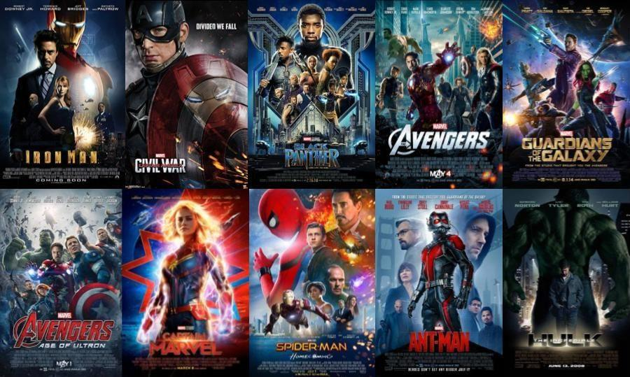

This project was apart of the Google Data Analytics Capstone project. The main goal of this project was to draw insights and trends from Fitbit users (smart watch company) so we can improve the products of BellaBeat (made-up company).
We followed the six-step analysis process:
Ask, Prepare, Process, Analyze, Share, and Act. This project was done in R using the Tidyverse library. Enjoy!
In this project we used a public API from Alpha Vintage that provides us the stock information for any ticker symbol within the last 20 years to develop
a live app that can visualize any stocks information. The purpose of this app was to generate a data visualization of any stock so that users will be able to visualize their trends.
The app was developed in R studio using the Shiny package. Enjoy!
As the covid vaccine is being distributed worldwide, I wanted to visualize how well countries are doing in getting their citizens vaccinated.
I used SQL to clean, explore and analyze the data and then used Tableau to create a dashboard to get a holistic view of the vaccine rollout by country. Enjoy!

In this project we cleaned and explored a Nashville housing dataset from Kaggle using SQL.
The dataset documents the housing market in Nashville in particular the value and selling price of a house.
The purpose of this project was to clean our data in order to perform our data exploration and analysis. Enjoy!

In this project we performed a correlation analysis on a movie listings using Python and Jupyter.
The purpose of this project was to do a deep analysis on what are the main contributing factors to gross income of a movie. Enjoy!